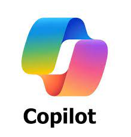

Hay varias IAs de diferentes tipos, colores y sabores. Pero la más sepsi es Copilot

Copilot es un sistema de inteligencia artificial creado por Microsoft. Es lo que se llama un sistema conversacional, lo que quiere decir que la manera de controlarlo e interactuar con esta IA es a través de un chat. Esto quiere decir que la manera de interactuar con esta inteligencia artificial es mediante un prompt textual. Esto son un tipo de comandos que realizas con un lenguaje natural. Por lo tanto, puedes hacerle una pregunta como que te diga determinada información, y te la dirá. Copilot funciona utilizando el modelo de lenguaje de inteligencia artificial GPT, el mismo que utiliza ChatGPT. De hecho, su principal característica es que utiliza GPT-4, la misma versión que usa ChatGPT Plus, por lo que es una de las mejores alternativas para usar GPT-4 gratis.
Copilot se utiliza como un asistente de inteligencia artificial para aumentar la productividad y la creatividad, automatizando tareas como la escritura, la búsqueda de información, la codificación y la gestión de datos en aplicaciones como Microsoft 365, el cual incluye Teams, Outlook, PowerPoint y Edge. También se usa en dispositivos Android para interactuar con el sistema operativo y en el navegador Edge para buscar y crear contenido de forma más eficiente.